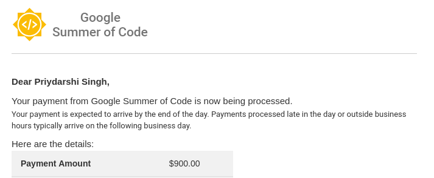

It’s been one month since the coding period for GSoC started. The first evaluation was completed last week, and I performed poorly :p. Well, I passed, but I feel I could have done more work than I did. This post is a description of a few problems that I faced, and the things that I learnt.
Mixed signals
I had to use cpdb-libs in my project, which depends on GLib 2.0. So to include the <cpdb-libs-frontend.h> header, I needed to compile the file by linking with the gio-unix-2.0 package. However, just including the header file gave me a strange looking error message that made no sense to me.

I found a hacky way around this: First I thought that I could just include the header file in the main project, with no implementation. That would not cause any conflicts, since I wouldn’t need to include the cpdb libs header. Later, I would compile the cpp file separately, without Qt. However, this idea failed because the compiler gave me ‘unimplemented function’ errors.
Then I decided to make a fake cpp class - it just contained dummy implementations for functions (cout << "inside function meow()"; :p ). Later, I separately compiled the real cpp file and moved the output file to replace the one created by Qt. I know this sounds like a crazy way to do it, but this actually worked: the functions implemented in the separately compiled file were the ones that were executed when using the Qt library! However, this led to another major problem: if I compile the actual file separate from Qt, I won’t be able to use the classes of Qt. :(
So I asked my mentor Dongxu for help. It turned out that the issue was that glib-2.0/gio/gio.h was using the identifier signals, which caused a conflict with Qt globals. Apparently, this is mentioned in Qt’s documentation for Signals and Slots. The issue was resolved by doing #undef signals before including the <cpdb-libs-frontend.h> header. I also realized that this is probably the reason most of Qt’s identifiers begin with the letter Q - otherwise they’d cause conflicts all around.
Signals again
For using the CPD backends, I had to communicate with the DBus API using a Frontend object. To initialize this object, I needed to pass two functions as callbacks - which would be executed whenever a printer is added or removed. In these functions, I put the code to add/remove the printer from the list of printers which would be used to populate the print dialog box. The problem here was that the dialog box was initialized before the DBus API could enumerate all the printers. Hence, none of the printers would appear in the dialog box.
While signals were the cause of the last issue, they were the solution to this one. Dongxu told me that this would be solved by using signals and slots, so I learnt about how they worked. Then I used the callback functions to emit a signal, which was received by a slot in the dialog box. The slot was responsible for repopulating the printers in the dialog box. This way, the printers detected after the dialog box was initialized would still be added into the dialog box.
PIMPL
Qt quite popularly uses the PIMPL pattern. The Qt Wiki provides a pretty nice description of why and how it is used. It was really interesting to learn about binary compatibility and how it affects libraries.
Evaluation
The first evaluation results were declared on 4th July. My mentor said that he expected significant improvements, on my part, in the fields of time commitment and communication (read, I performed unsatisfactorily in the first month). I’ll definitely do better in the second month :D
Anyway, I received 30% of my GSoC stipend, and I am haaapppppyyy! 